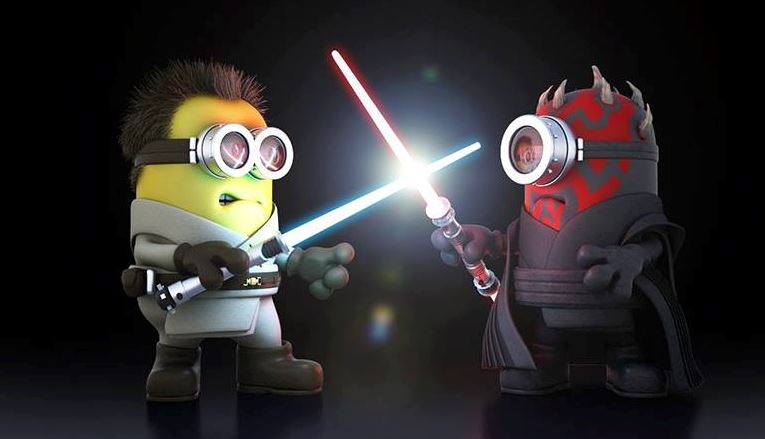
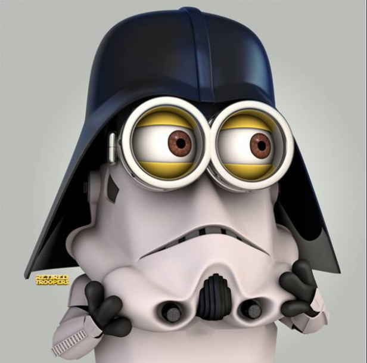

Help me, Obi-Wan Kenobi. You're my only hope. What's this? What is what?!? He asked you a question... What is that? Help me, Obi-Wan Kenobi. You're my only hope. Help me, Obi-Wan Kenobi. You're my only hope. Oh, he says it's nothing, sir. Merely a malfunction. Old data. Pay it no mind. Who is she? She's beautiful. I'm afraid I'm not quite sure, sir. Help me, Obi-Wan Kenobi... I think she was a passenger on our last voyage. A person of some importance, sir -- I believe. Our captain was attached to.. . Is there more to this recording? Behave yourself, Artoo.  You're going to get us in trouble. It's all right, you can trust him. He's our new master. This is Chewbacca. He's first-mate on a ship that might suit our needs. I don't like the look of this. Han Solo. I'm captain of the Millennium Falcon. Chewie here tells me you're looking for passage to the Alderaan system. Yes, indeed. If it's a fast ship. Fast ship? You've never heard of the Millennium Falcon? Should I have? It's the ship that made the Kessel run in less than twelve parsecs! I've outrun Imperial starships, not the local bulk-cruisers, mind you. I'm talking about the big Corellian ships now. She's fast enough for you, old man. What's the cargo? Only passengers. Myself, the boy, two droids, and no questions asked.
What is it? Some kind of local trouble? Let's just say we'd like to avoid any Imperial entanglements. There she is. See-Threepio, do you copy? For the moment. Uh, we're in the main hangar across from the ship. We're right above you. Stand by. You came in that thing? You're braver that I thought. Nice! Come on! It's them! Blast them! Get back to the ship! Where are you going? Come back! He certainly has courage. What good will it do us if he gets himself killed? Come on! I think we took a wrong turn. There's no lock! That oughta hold it for a while. Quick, we've got to get across. Find the control that extends the bridge . Oh, I think I just blasted it. They're coming through! Here, hold this. Here they come! For luck!  Learn about the Force, Luke. Look, I can take you as far as Anchorhead. You can get a transport there to Mos Eisley or wherever you're going. You must do what you feel is right, of course. Have you been in many battles? Several, I think. Actually, there's not much to tell. I'm not much more than an interpreter, and not very good at telling stories. Well, not at making them interesting, anyways. Well, my little friend, you've got something jammed in here real good. Were you on a cruiser or...